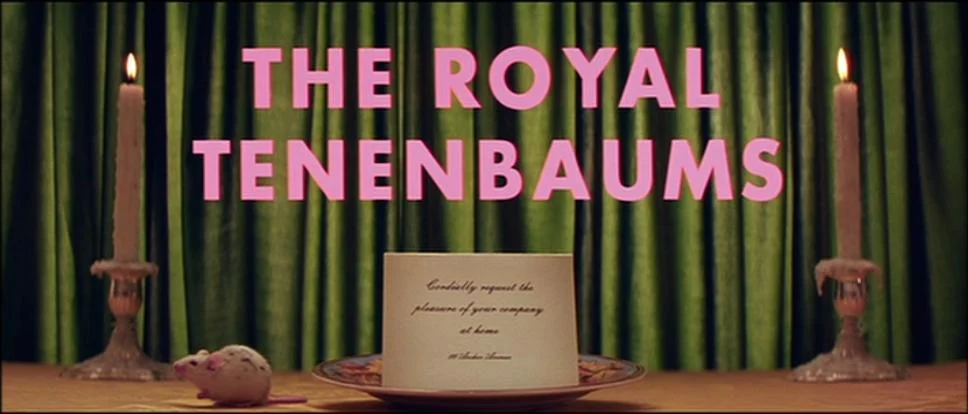

LA GEOMETRIA DELLE INQUADRATURE: DA KUBRICK A WES ANDERSON
Nel contesto cinematografico, il Futura ha cessato di essere un semplice veicolo di informazioni per diventare un elemento della messinscena. Il regista Stanley Kubrick, celebre per il suo rigore geometrico ossessivo, ne ha fatto la firma visiva di capolavori come 2001: Odissea nello spazio ed Eyes Wide Shut. Per Kubrick, le linee pulite e le proporzioni matematiche del font riflettevano perfettamente il senso di freddezza tecnologica e di alienazione intellettuale dei suoi mondi.
Al polo opposto della narrazione, ma unito dallo stesso rigore formale, Wes Anderson ha trasformato il Futura (nello specifico la variante Bold) nel pilastro grafico della sua intera filmografia, da I Tenenbaum a Un colpo da dilettanti. Nei film di Anderson, il font non serve solo per i titoli di testa, ma colonizza l'intero universo: appare su valigie, autobus, libri e uniformi. Accostato a palette cromatiche pastello e a inquadrature rigidamente simmetriche con prospettiva a un punto centrale, il Futura perde la sua originaria austerità industriale tedesca per acquisire una nota nostalgica, eccentrica e profondamente artigianale.